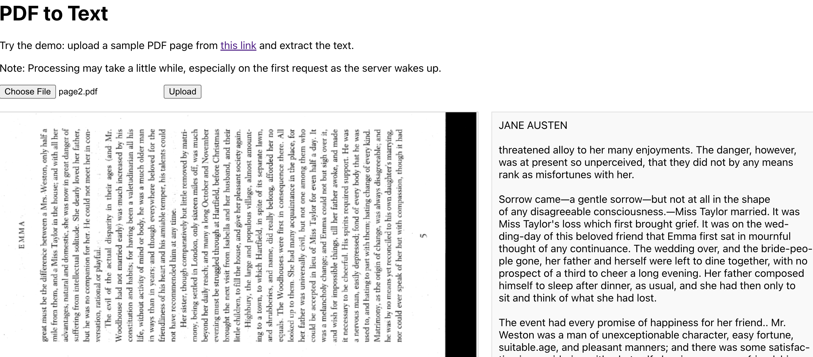

PDF-to-text using OCR
Take a PDF page and then extracts text using OpenCV, Tesseract, React, and Docker
Take a PDF page and then extracts text using OpenCV, Tesseract, React, and Docker
Uses Gemini API and few-shot prompting to take in a URL to an ESPN race report and output information about driver Lando Norris.
Optimized score-based diffusion models to generate simulated data related to gamma-ray astronomy and improve efficiency in simulations.
Applied and optimized CNNs to detect sources in noisy telescope data. Evaluated performance as compared to specialized Python package.